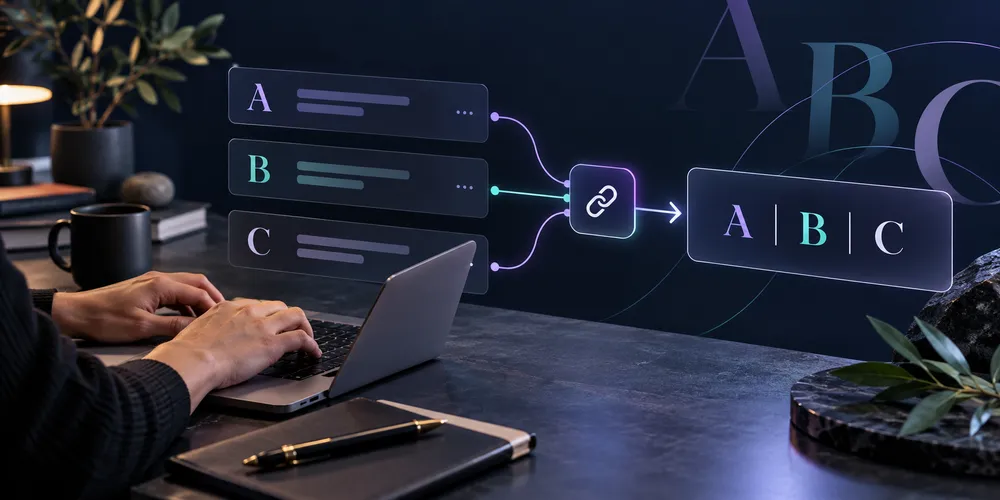

QR Code Generator
Create and download QR codes from text or URLs.
On your deviceLOOX UTILITIES
Count words, transform text, calculate values and solve everyday tasks with lightweight browser utilities.
26 tools
Create and download QR codes from text or URLs.
On your device Everyday Utilities
Everyday UtilitiesStyle short bios and captions with Unicode lettering, accents and decorative frames.
On your device Everyday Utilities
Everyday UtilitiesA focused place to draft, reorganize and save plain text without sending the document to a writing service.
On your deviceMake headings, lists and copied paragraphs consistent with uppercase, lowercase, title case and sentence case.
On your device
Everyday UtilitiesBring separate pieces of text together with a separator you choose.
On your device Everyday Utilities
Everyday UtilitiesTurn a long block into useful parts with a literal delimiter or line breaks.
On your deviceClean up accidental gaps while deciding whether to preserve paragraph breaks.
On your deviceRecover readable text from an HTML snippet without displaying the markup as a live page.
On your device Everyday Utilities
Everyday UtilitiesCreate a simpler text copy by removing emoji clusters, flags and common emoji sequences.
On your deviceRemove Unicode symbol characters while keeping letters, numbers, ordinary punctuation and spacing.
On your device Everyday Utilities
Everyday UtilitiesGive a short message a playful upside-down appearance using approximate Unicode counterparts.
On your device Everyday Utilities
Everyday UtilitiesCreate mathematical bold-style Unicode letters for a short label or caption.
On your deviceGive supported Latin letters an italic-style appearance without a rich-text editor.
On your device Everyday Utilities
Everyday UtilitiesExplore a blackletter-style alphabet for an ornamental heading or creative signature.
On your deviceTurn a short phrase into a flowing script-style Unicode version.
On your device Everyday Utilities
Everyday UtilitiesGenerate integers within an inclusive range using the browser’s cryptographic random source.
On your deviceCreate clearly fictional email-shaped values for mockups, sample tables and development fixtures.
On your deviceGenerate memorable-looking strings from randomized syllables, optional digits and separators.
On your device Everyday Utilities
Everyday UtilitiesCreate random passwords with selectable character groups and a length you control.
On your deviceFind a starting point for a handle without sharing your name or personal details.
On your device Everyday Utilities
Everyday UtilitiesGenerate sample identifiers and arbitrary character strings from a character set you define.
On your devicePull email-shaped addresses out of a text document and remove repeated entries.
On your deviceCollect HTTP and HTTPS links from a block of notes or copied text.
On your deviceUnderstand the length of a draft with live counts for words, characters, lines and paragraphs.
On your deviceMake consistent changes across a draft without repeatedly editing the same phrase by hand.
On your device Everyday Utilities
Everyday UtilitiesBuild a clearer request for an AI writing assistant with a goal, audience, tone and useful constraints.
On your deviceNo tools match this search. Try a shorter phrase or explore another category.
Count words, transform text, calculate values and solve everyday tasks with lightweight browser utilities. Open a tool to see its supported formats and controls. Tools marked “On your device” process locally; cloud features require a connection and may require a LOOX account. Upcoming tools remain separate from the available collection.
Browse the complete LOOX toolkit